O Livro: Rio São Francisco de cabo a rabo
Em nossa mais recente aventura, viajei desde a nascente do Rio São Francisco até o mar. Começando de caiaque e finalizando de jet ski, registrei histórias, culturas e paisagens únicas. O livro é um convite para conhecer de perto o "Velho Chico" e refletir sobre sua importância para o Brasil.
Uma aventura de grandes desafios, em que te passarei o conhecimento de ponta a ponta.
📘 Lançamento em Novembro!
Garanta já o seu exemplar do livro “Rio São Francisco de cabo a rabo” e embarque nessa jornada inesquecível pelo Rio São Francisco!
Garanta já o seu exemplar do livro “Rio São Francisco de cabo a rabo” e embarque nessa jornada inesquecível pelo Rio São Francisco!

 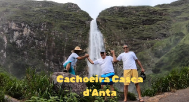
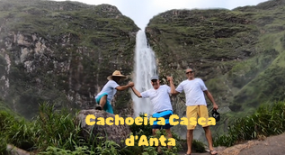
 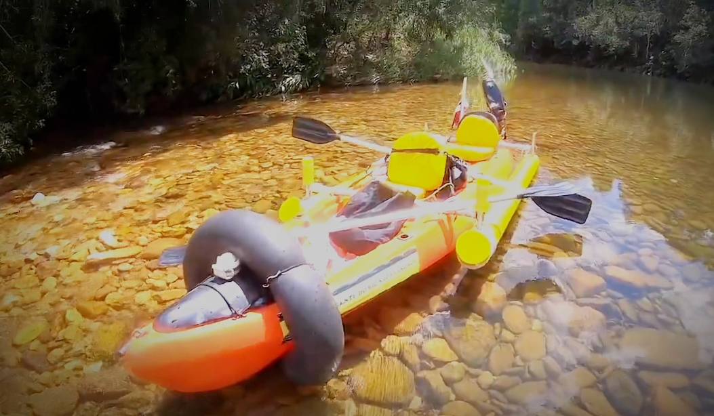
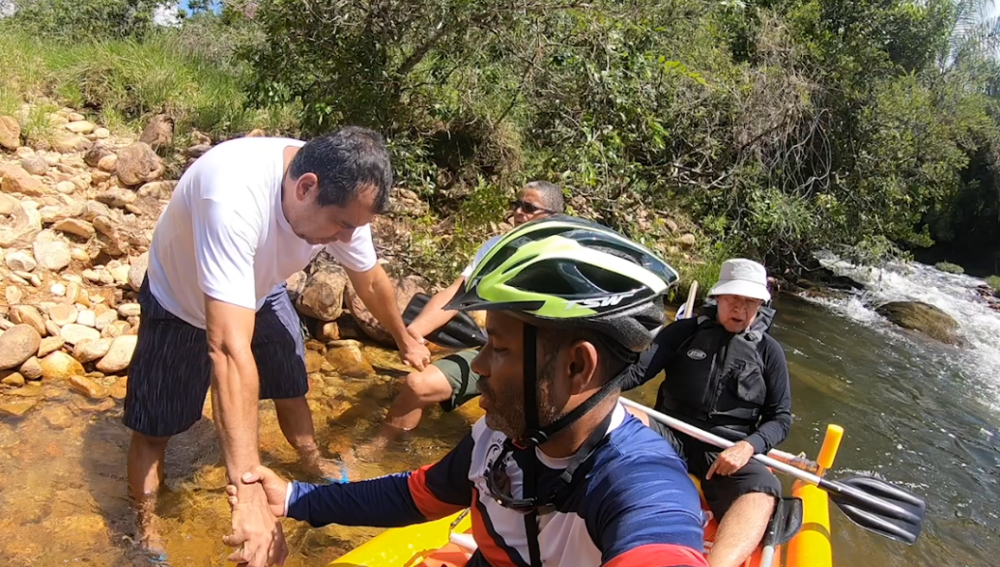
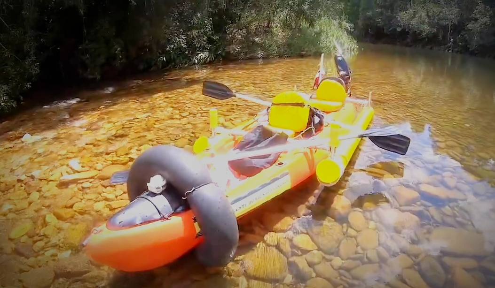
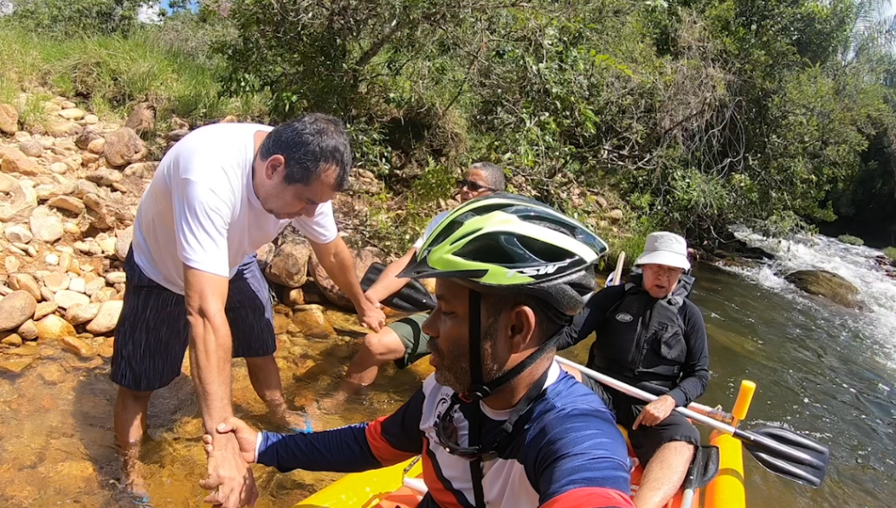
 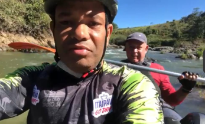
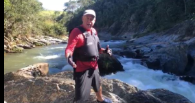
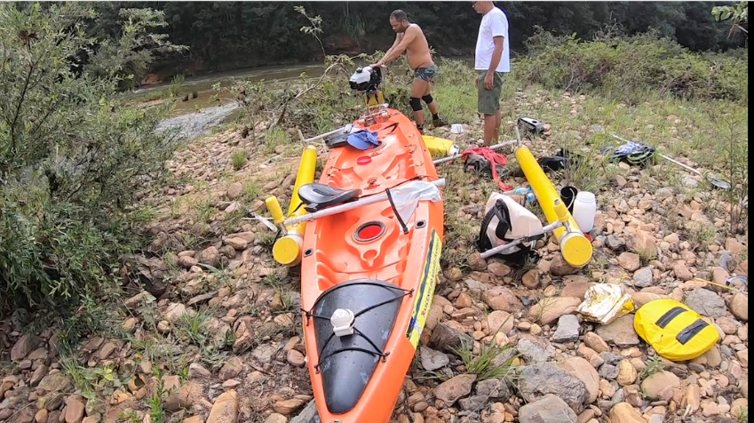
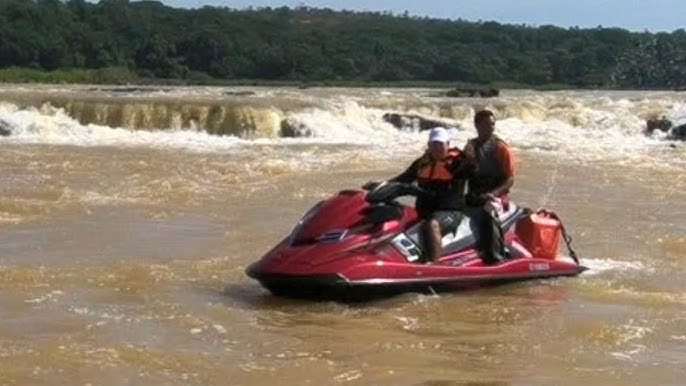
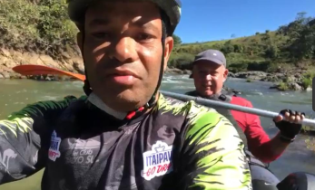
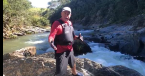
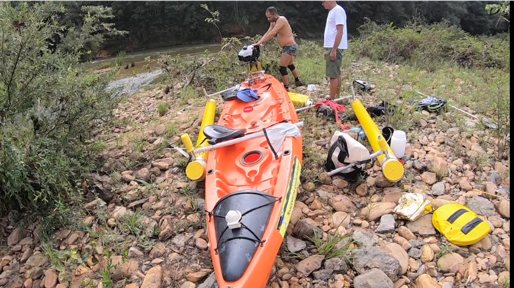
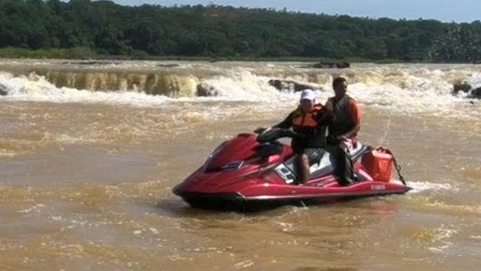
 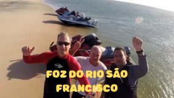
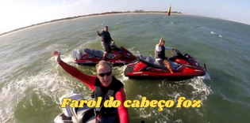
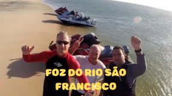
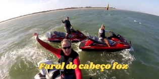